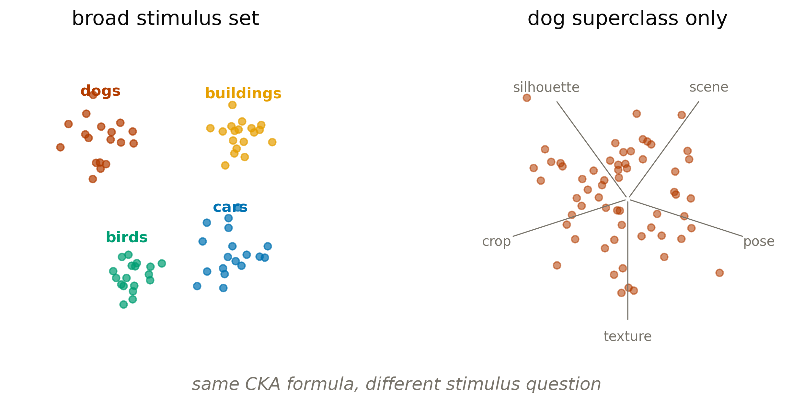
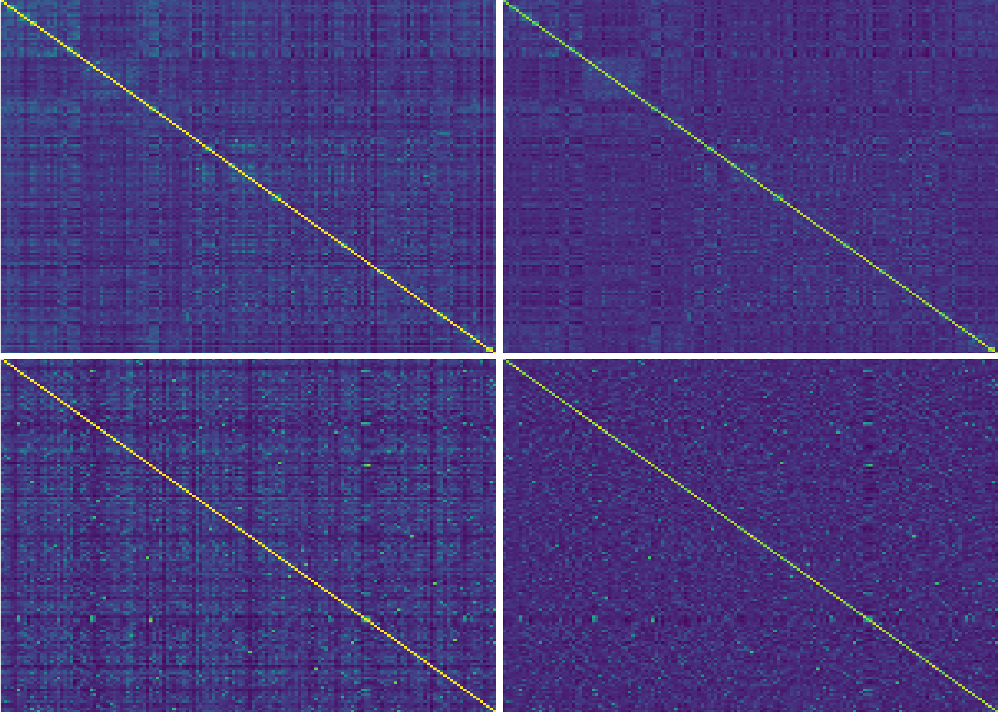
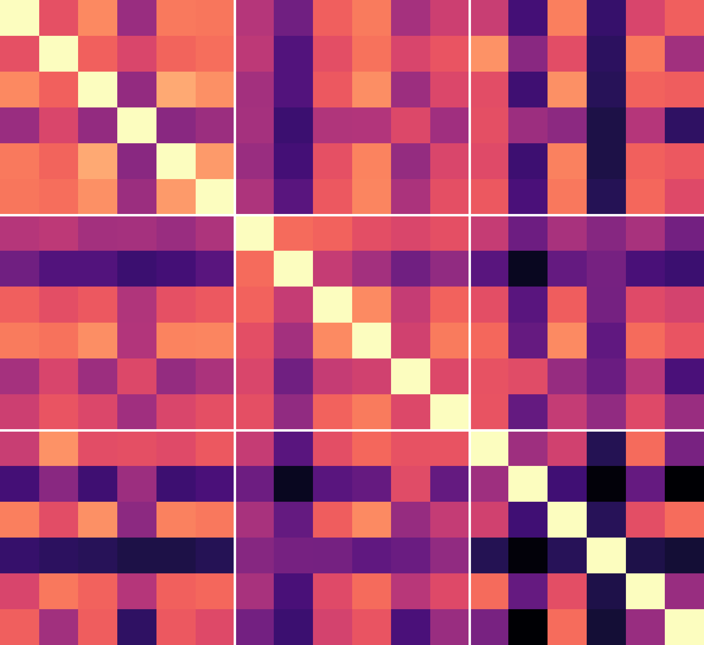
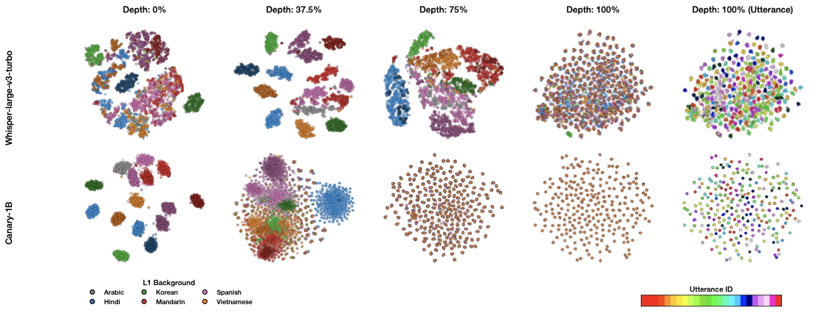
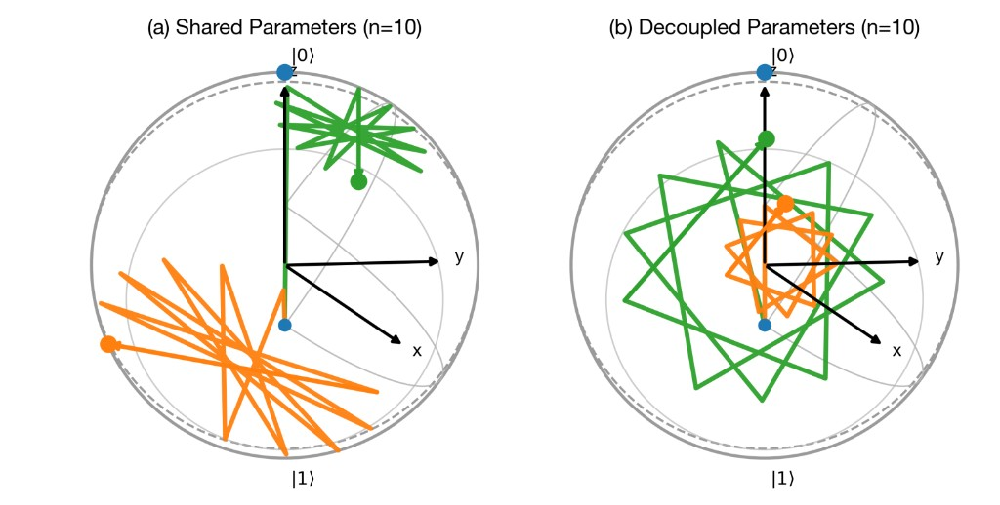
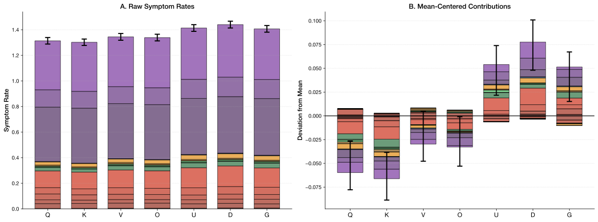

Model similarity depends on the measurement.
Nathan Roll (Stanford)
Dillon Silzer (Cloudaen)
One probe of similarity: compare the geometry induced by a stimulus set.
Change the set and the answer changes. Broad categories give models an easy way to agree. Restrict to one superclass and the comparison shifts to processing strategy.

CKA mixes category agreement with stimulus-level agreement.
Many categories
The HMMTH term encodes how each model arranges class centroids. Every competent classifier agrees on this, so CKA stays high.
One superclass
M collapses to a single point. Centering maps it to zero. What remains is WWT: pose, texture, background, breed. CNNs and ViTs organize these differently.
What the competition fixed, and what it kept hidden.
Both tracks use CKA on a hidden evaluator. Local work had to use proxy models and proxy images, so the real test was whether a measurement story transferred beyond the visible setup.
Fixed
The score is mean pairwise CKA over centered hidden embeddings.
Hidden
The evaluator controls the final models, layers, preprocessing, and resolutions.
Submitted
Only JSON: 20 model-layer pairs for Blue, 1,000 ImageNet image IDs for Red.
Choose 20 models that look maximally aligned.
The object being optimized is not accuracy. It is the density of a 20-model subgraph in CKA space.
Input
141 vision models with fixed representation layers
Choice
20 model-layer pairs
Score
maximize mean pairwise CKA
Choose 1,000 images that make models disagree.
Here the models are fixed. The intervention is the stimulus set: find images where the same architectures induce different representational geometries.
Input
ImageNet validation images
Choice
1,000 image identifiers
Score
maximize 1 − mean CKA
Centering does not make the stimulus set neutral.
On multi-class images the block skeleton survives centering. On dog-breed images it vanishes, exposing the residual geometry models use inside a category.
Top row
Mixed ImageNet classes. Block structure visible before and after centering.
Bottom row
Dog breeds only. No blocks; residual within-class geometry is what remains.

Real ResNet50 embeddings. Left column: K. Right column: HKH.
An architecture-level view: which models look similar under CKA?
Model selection becomes a densest-20-subgraph problem over the proxy CKA matrix. Under this view, similarity concentrates in ViT-family models: 18 of 20 are attention-based architectures.
The white grid lines in the figure separate architecture families. The bright top-left block is the high-CKA attention-family region. Cooler off-diagonal blocks show lower cross-family alignment.

Real pairwise CKA from actual model embeddings. Text removed; family blocks explained verbally.
A stimulus-level intervention: remove the easy contrast.
Dogs suppress broad category agreement. What remains is pose, texture, crop, background, and scene: axes that CNNs, ViTs, CLIP models, and masked autoencoders organize differently.
125
dog + canid synsets in ImageNet
6,250
candidate images
5,000
scored pool after divergence filter
1,000
submitted after 100k SA iterations
11 proxy models spanning CNN, ViT, CLIP, DINO, MAE, MLP-Mixer, and MambaOut.
Read CKA as a conditional measurement.
Red hidden score 0.547 vs baseline 0.479. The Platonic Representation Hypothesis says models are converging (Huh et al., 2024). This view suggests some convergence reflects shared category agreement. Restrict the stimuli and it weakens.
Red baseline
0.479
Red hidden eval
0.547
Red proxy
0.584
Blue submission
18/20
attention-family models
Score = 1 − mean pairwise CKA. Proxy overestimated hidden, but the direction transferred.
Processing strategy in speech: categorize early, integrate late.
Layerwise probes ask where information becomes usable. The same utterances separate, merge, or stay mixed at different depths depending on the encoder.

Two ASR encoders, same utterances. Color reveals whether depth organizes the representation by background language or utterance identity.
Processing strategy in quantum language models: entanglement as memory.
A strategy probe asks whether the circuit uses a new computational route or embeds a classical one. Shared and decoupled parameterizations produce different state-space trajectories.

Bloch-sphere trajectories for shared versus decoupled parameters. The geometry makes the processing strategy visible.
A behavioral lens: compare failures, not activations.
TAB scores humans and LLMs in the same 19-symptom space, validated against expert SLPs. The question becomes: when the system is damaged, does it fail in human-like coordinates?
Common measurement space
Human aphasia transcripts and model outputs are scored with the same symptom battery.
Failure coordinates
Similarity is not "same answer." It is whether damage moves behavior along the same axes.
Use case
Lesions turn architecture into evidence: attention and FFN damage should produce different symptom profiles if they support different computations.
A lesion lens: processing strategy revealed by damage.
112k lesioned outputs show that attention and FFN damage produce distinct, depth-stratified failure regimes. The symptoms are recognizable, but the mixture is machine-specific rather than a clean copy of classical aphasia.

Raw symptom rates and mean-centered contributions by component. Different lesions move the model through different symptom coordinates.
Similarity is not one thing.
A model can look aligned under one probe and diverge under another. The right question is not whether two systems are similar, but which processing strategy the measurement is sensitive to.
Stimuli
Broad categories inflate agreement. Fine-grained sets expose residual structure.
Depth
Speech models can solve the same task while making information usable at different layers.
State and damage
Quantum trajectories and lesion symptoms reveal strategies that output accuracy hides.
Likely questions
Is this metric hacking?
Yes, in the challenge sense. That is the point: CKA is conditional on stimulus composition.
Are dogs a true single class?
No. They are a fine-grained superclass. The goal is to reduce broad category contrast, not remove every semantic difference.
Does this mean CKA is useless?
No. It means CKA needs stimulus controls and careful interpretation.
What about proxy mismatch?
11 proxies at 224px vs hidden models at 160-1024px. The direction transferred; the magnitude did not.